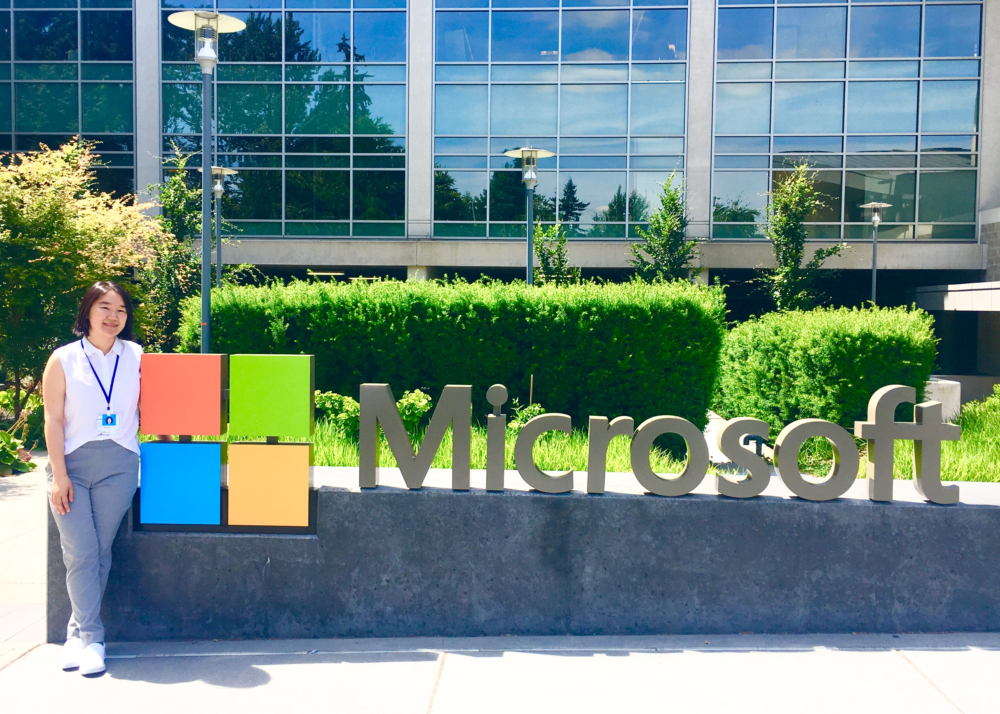

home | about | portfolio | resumeJun. 17— Happy summer! I am starting my internship at Microsoft as an Explorer Intern on the Azure PRSS team with my wonderful podmates on the left. Here are some of my takeaways in my first three weeks this unique experience!
I am also working with my CodeU team to build a web app using Google AppEngine and Google APIs. I had a great time at the retreat last weekend and look forward to stay connected in Google Student community throughout the summer.
I will be attending GHC19 this September and will be helping with mentorship for Windows Insider Women in Computing Program. Being a scholar has provided me insight and mentorship with great leaders at Microsoft and I am looking forward to give back to help future scholars navigate their careers.